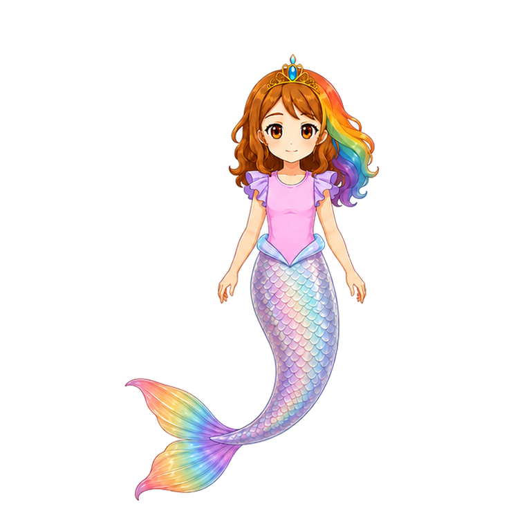
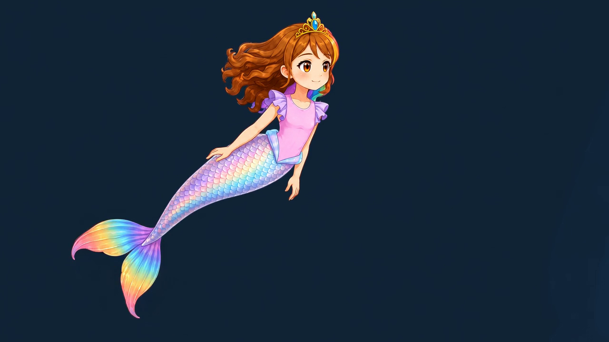
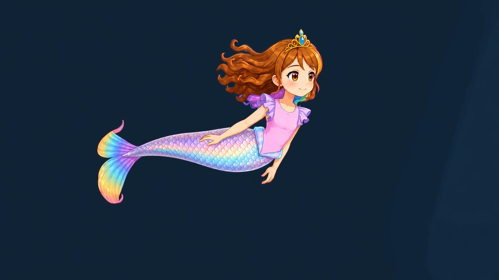

Two distinct source performances. These are existing reference pictures and new acting briefs—not completed animations, accepted poses, or locked opening frames.
Choose a suitable actual Grok frame for each generation. Preserve identity, not the old opening pose. Any bridge to the existing resting sprite is separate future work if needed.
Actual visual inputs available in this packet

Identity/style authority: face, crown, costume and materials. Not an opening or endpoint pose requirement.

Actual Grok source frame 84, 3.5s at 24fps. Optional input candidate after individual screening; source motion remains owner-rated 4.25, not accepted.

Actual source frame 120, 5s. Another pose option, not a prescribed slow or dash keyframe. Newer published footage may offer better choices.
One continuous video per performance
RSW-SLOW-01 — relaxed swim
Warm curiosity. Soft propulsion, generous glides, responsive shoulders and relaxed asymmetric arm recovery.
Entry, about 0–1s: eyes notice right; a small smile and gentle chest/elbow gathering flow from the selected native pose.
Cycle one, about 1–4s: tail stroke → connected body response and small bent-elbow scull → long easy glide.
Cycle two, about 4–7s: genuinely perform the recurring cycle again. Hair and broad fin follow with coherent delayed movement.
Exit, about 7–10s: reduce effort, blink and naturally settle. No compulsory match to the old resting painting.
Purposeful bright energy. Stronger launch, quicker compact recoveries and a clear controlled deceleration—not retimed relaxed footage.
Gather, about 0–0.8s: committed gaze, eager composed expression and compact chest/elbow/tail preparation.
Launch, about 0.8–1.5s: stronger connected tail propulsion; bent arms sweep and recover without Superman stiffness.
Fast recurring action, about 1.5–7s: at least two actual fast cycles; short stronger pulses, compact recoveries, readable glides and full-body response.
Exit, about 7–10s: lengthen the glide and ease down; hands, curls and fin settle after the body. End in the performance's natural pose.
These times are acting guides, not mandatory cut points. Choose real entry/cruise/exit windows after watching the returns. Match loop pose and velocity, including arms, hair and fin. Compare both modes at native 1x.
Original source pool — not the requested new animations
Native source video and optional frames 84, 102, 120, 138, 154. Input screening is not source-motion acceptance. Never bind this board or a screenshot of the player as IMAGE_1.
Review boundaries
Keep right-facing source presentation, stable scale, complete crown/hands/fin and painted identity. Reject rigid bodies, pinned fingertips, hair distortion and fin hinge/pinch/inversion. A left display mirror comes later; no front/back set.
Failed source → written Grok revision, never Aseprite. Each mode needs two independent reviews, lower unrounded mean at least 4.8 and no blocking defects, then human review. No exact old-rest-pose match is required. This board claims neither generated footage nor runtime/cinematic acceptance.
{kind=link}
{kind=link}
{kind=link}
{kind=link}
{kind=link}